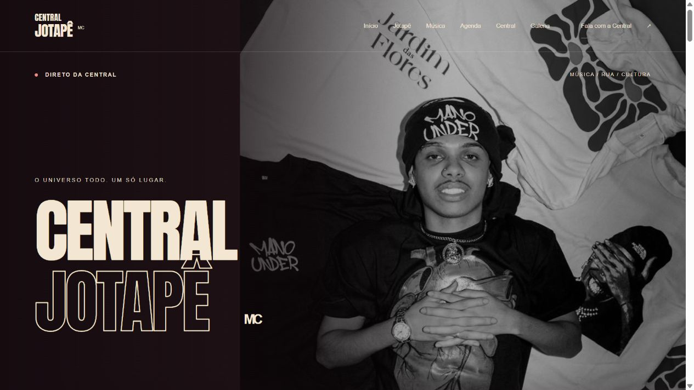
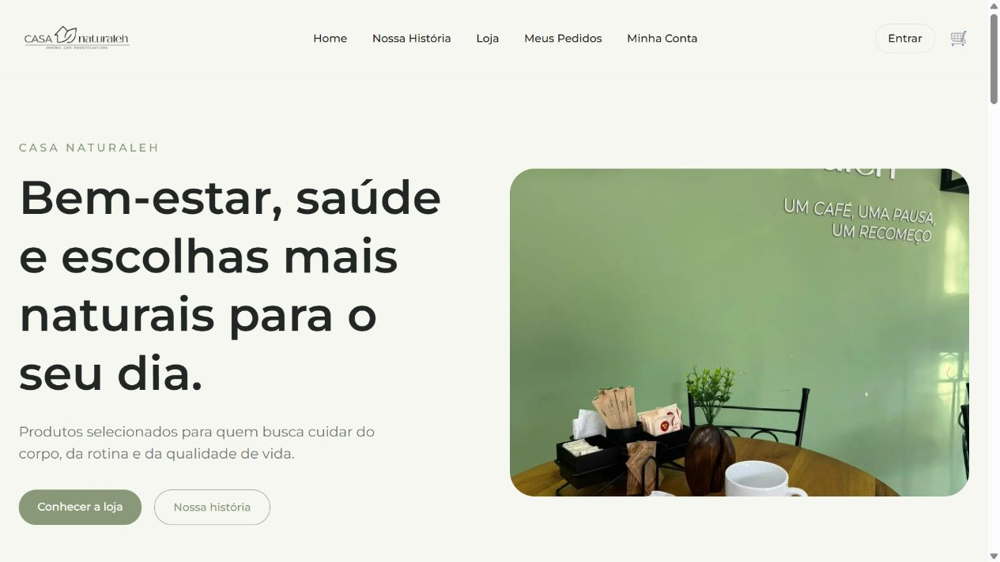
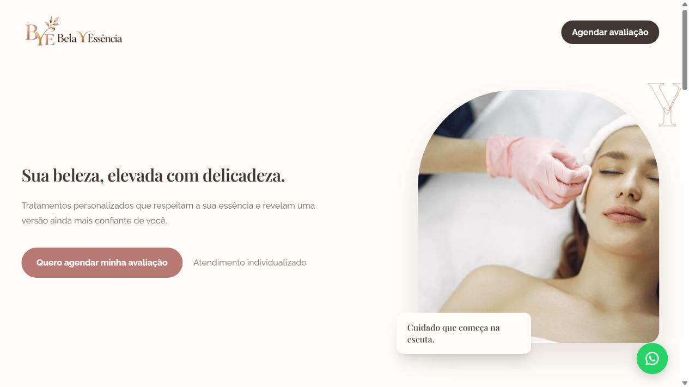

Seu negócio com a presença digital que merece.
Criamos sites profissionais que apresentam sua empresa, fortalecem sua credibilidade e facilitam o contato com novos clientes.
Conversar sobre meu siteCriamos sites, sistemas e automações sob medida para organizar processos, simplificar operações e ajudar sua empresa a crescer.
Conte seu desafio no formulário. Se preferir, converse pelo WhatsApp.
Um site que aproxima novos clientes.
Informações reunidas em um só lugar.
Menos tarefas manuais e repetitivas.
Presença digital, operação e vendas: encontre a solução para o que sua empresa precisa organizar ou melhorar.
Criamos sites profissionais que apresentam sua empresa, fortalecem sua credibilidade e facilitam o contato com novos clientes.
Conversar sobre meu siteDesenvolvemos sistemas sob medida para centralizar informações, organizar operações e reduzir o trabalho manual do dia a dia.
Solicitar um sistemaOrganize contatos, acompanhe negociações e tenha mais visibilidade sobre seu processo comercial com uma solução adaptada ao seu negócio.
Conversar sobre meu CRMDesenvolvemos lojas virtuais personalizadas para apresentar produtos, facilitar a jornada de compra e oferecer uma experiência profissional aos clientes.
Planejar minha lojaAutomatizamos atividades operacionais para reduzir retrabalho, melhorar a organização e liberar tempo para o que precisa da sua atenção.
Conversar sobre automaçãoConectamos as ferramentas que sua equipe já usa para evitar cadastros repetidos e facilitar a troca de informações entre áreas.
Encontrar uma soluçãoAntes de propor uma solução, entendemos sua operação. Depois, combinamos as etapas para acompanhar o projeto com clareza.
Entendemos sua necessidade, objetivo e o problema que precisa ser resolvido.
Combinamos o que será feito, as etapas e os prazos do projeto.
Desenvolvemos a solução e alinhamos os detalhes com você ao longo do projeto.
Validamos o funcionamento, orientamos o uso e preparamos a solução para a sua rotina.
Conheça algumas das soluções digitais desenvolvidas pela Loung Tech para negócios de diferentes segmentos.
 PROJETO REAL
PROJETO REALSite de apresentação profissional com serviços de adestramento e orientação ao tutor, fotos do trabalho e contato direto pelo WhatsApp.
Visitar site PROJETO REAL
PROJETO REALSite profissional com apresentação da cirurgiã-dentista, tratamentos, galeria de casos e chamadas para agendamento pelo WhatsApp.
Visitar site
PROJETO REALPlataforma digital para divulgação de notícias, eventos e conteúdos sobre rap e batalhas de rima, com identidade visual personalizada e design responsivo.

PROJETO REALLoja virtual personalizada com catálogo de produtos, páginas individuais e carrinho de compras, desenvolvida com foco na experiência do usuário.

PROJETO REALSite institucional para apresentar serviços de estética e bem-estar com uma experiência digital elegante, intuitiva e adaptada a diferentes dispositivos.
Cada empresa tem desafios próprios. Na Loung Tech, entendemos sua operação e suas necessidades antes de propor uma solução digital personalizada.
Criamos sites, sistemas e automações para simplificar processos, organizar informações e abrir novas possibilidades para o seu negócio. Você acompanha o projeto com etapas e expectativas claras.
Processos desorganizados, tarefas manuais ou falta de presença digital podem limitar sua operação. Conte para a Loung Tech o que sua empresa precisa. Vamos entender seu desafio e desenvolver uma solução adequada à sua realidade.
Prefere conversar diretamente? Fale pelo WhatsApp ou envie os detalhes do projeto por e-mail.